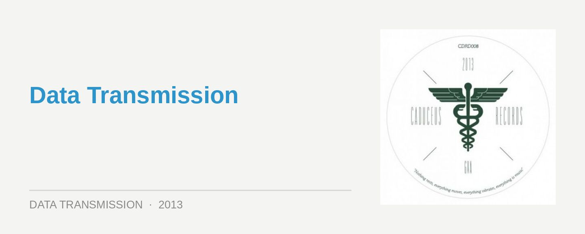
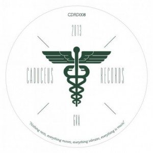

Oliver Deutschmann – Breakdown

Berlin-based Panorama Bar resident Oliver Deutschmann returns for his first new release following his debut Out of the Dark album earlier this year, this time branching out from his own Vidab label and hooking up with the fairly fresh Swiss imprint Caduceus Records (home to Deepchild’s recent Bethania EP). Deutschmann brings a distinct approach to his productions that puts the focus on the spacey atmospherics, made possible by a fairly dense approach to his arrangements. This is again on display here, though he’s going for more of a balls-out techno approach than the house-based material we heard on Out of the Dark.
The EP’s lead A-side Breakdown is a bubbling techno monster that would be more at home on Berghain’s main floor, instead of Deutschmann’s typical home of the Panorama Bar; a fact established by the apocalyptic thud of the kickdrum, the stark percussion and the shaky acid line he builds the tune’s framework around. A looped vocal chant is brought in, emphasising the hypnotic techno vibes at the forefront, much more so in this case than Deutschmann’s trademark atmospherics. Dutch veteran Steve Rachmad steps up for a remix that keeps the track’s core components, yet strips things right back for an even harsher, in-your-face stomp.
Keeping things consistent, Braineater is an even more stripped-back slamming techno affair; built from the groundwork of a pounding 4/4 that’s custom-made to fill a warehouse, and techno handclaps galore. A functional weapon. LAD’s remix on the other hand slows things right down to find the tech-house groove. Overall, a nice change of pace for Deutschmann.